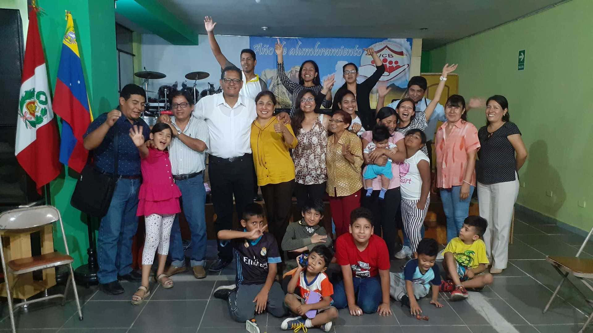

ICB Casa De Misericordia
Te estamos esperando hay un lugar para ti
NUESTRO PROPÓSITO ES
- Atraer
- Plantar
- Discipular
- Servir
- Adorar
UNA IGLESIA DE IMPACTO QUE LEVANTA SUS MANOS Y RINDE SU CORAZÓN PARA ADORAR AL DIOS VIVO
Somos una iglesia que anhela a Dios y hacerlo sonreír, amamos su casa y como árboles que dan fruto estamos plantados en ella, nos comprometemos con su reino y a darlo todo, aun nuestra propia vida, por su causa.

NUESTROS HORARIOS
| Reunion | Horarios |
|---|---|
| Culto General | Domingo 4pm |
| Doctrina | Martes 7pm |
| GCF | Jueves 8pm |
| Oracion | lunes, miercoles, viernes 6am |
Pastores
Prs. Marlon y Jacky Arias